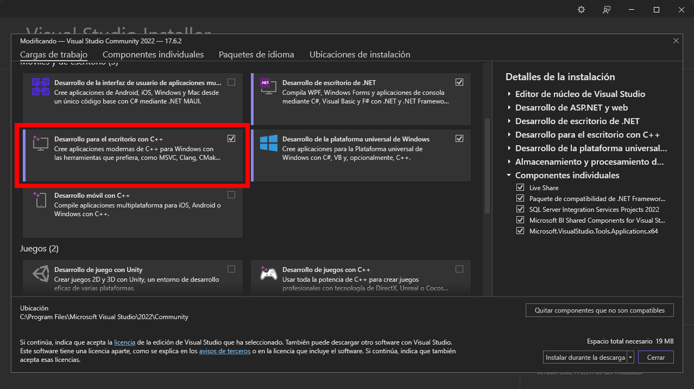
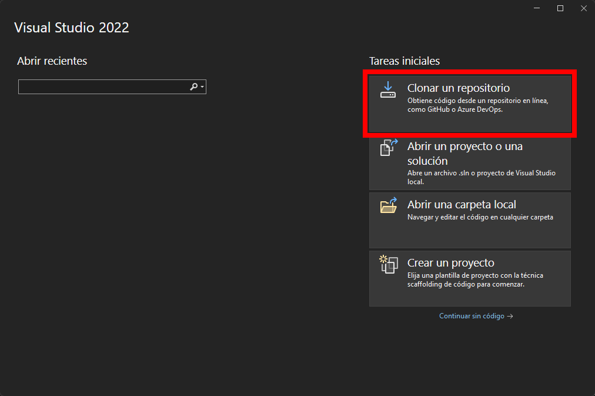

Índice
1 - Requisitos 2 - Instalación 3 - Funcionaniento 4 - Descripción
4.1 - Agregar Empleados
4.2 - Mostrar Empleados
4.3 - Actualizar Empleados
4.4 - Borrar Empleados
4.5 - Borrar Lista
4.6 - Calcular el salario de un empleado en especifico
4.7 - Calcular el salario de todos los empleados
4.8 - Salir
1 - Requisitos
Para poder ejecutar este proyecto necesitas: - Tener instalado Visual Studio Community 2022 o una versión más reciente. - Tener instalado en Visual Studio 2022 la carga de trabajo "Desarrollo para el escritorio con C++". 
2 - Instalación
Para instalar el programa puedes ya sea descargar una copia del código fuente en formato .zip, extraerlo y abrir la solución (El archivo .sln) en Visual Studio, o puedes abrir Visual Studio, seleccionar la opción que dice "Clonar Repositorio".  Copias el link del repositorio, lo pegas, y le das aceptar, Visual Studio se encargará de descargar los archivos del repositorio, una vez se haya terminado de realizar el proceso, puedes ejecutar el proyecto, o ver cómo está construido el código.
3 - Funcionamiento del Programa
El programa se encargará de almacenar, modificar, mostrar y borrar empleados y almacenarlos en una lista, con este programa podrás calcular salarios mensuales de cada empleado basado en el tipo de puesto del empleado, la cantidad de horas que trabaja al mes, la cantidad de horas extras que se acumulado durante el mes, la cantidad de hijos que ese empleado(a) tenga, una vez que se hayan registrado los empleados y salgas del programa del programa, los datos se guardarán en un archivo llamado datosEmpleado.dat, y una vez que inicies el programa nuevamente, el programa leerá los datos de ese archivo y los guardará nuevamente en memoria.
4 - Descripción del Programa
Cuando inicies el programa, se te presentará esta pantalla, para avanzar debes del pulsar cualquier tecla para continuar y se te presentará con en esté menú, solo pulsa el número que corresponda a la opción que quieras entrar.
4.1 - Agregar Empleados
Para registrar un empleado al sistema se le solicitará la siguiente información: - ¿Qué tipo de cedula tiene? Si es Nacional, Jurídica, o Extranjero, debes el pulsar el número que corresponde con la opción del tipo de cedula. - El número de cedula, deberá de ingresar la cedula de acuerdo al tipo de cedula que escogiste, se verificará que el formato sea de acuerdo al tipo de cedula escogido, si la cedula que vas a ingresar al sistema ya ha sido guardada en la lista previamente. - El nombre completo del empleado(a). - La nacionalidad del empleado(a). - Donde reside el empleado(a). - Cuántos hijos tiene el empleado(a). - El Estado Civil del empleado(a), deberás pulsar el número que corresponda con las opciones del Estado Civil que se te presentan. - Las horas de trabajo mensuales. - Las horas de trabajo extras acumuladas durante el mes. - ¿Qué tipo de empleado es? Si es empleado en Empleado Común, o si es un Gerente, deberás de pulsar el número que corresponda con la opción que del tipo de empleado. Una vez llenados todos esos datos… Se le preguntará que, si los datos ingresados han sido correctos, solo deberás de pulsar la tecla “S” para Sí, o “N” para No, en caso de que los datos que hayan sido ingresados no son los correctos, se le solicitará volver a llenar los datos, una vez que confirmes que los datos son correctos, los datos serán guardados en una lista y serás redirigido al menú principal.
4.2 - Mostrar Empleados
En esta opción se te mostrará una lista de todos los empleados que han sido registrados en el sistema, con todos los detalles de los empleados.
4.3 - Actualizar Empleados
En esta opción podrás cambiar los datos de un empleado en específico que ya este registrado en el sistema, al inicio se te mostrará una lista en la que te mostrará un número de cedula y el nombre del empleado perteneciente, y se te solicitará que ingreses el número de cedula del empleado que quiera modificar, una vez que haya ingresado el número de cedula correctamente, se te solicitarán los mismos datos que cuando agregaste un usuario.
4.4 - Borrar Empleados
Para borrar un empleado de la lista, se le mostrará al usuario una lista de los usuarios que están registrados mostrando su número de cedula y el nombre del empleado perteneciente, y se le pedirá que ingrese el número de cedula del usuario que quiere eliminar, una vez ingresado correctamente, el usuario será eliminado de la lista.
4.5 - Borrar Lista
Esta opción borrará toda la lista de los empleados que se han ingresado, los cambios se guardarán una vez realizado esa acción por lo que los cambios no son reversibles.
4.6 - Calcular el salario de un empleado en especifico
Para calcular el salario mensual de un empleado en específico, al inicio se le mostrará al usuario una lista de los usuarios que están registrados mostrando su número de cedula y el nombre del empleado perteneciente, y se te solicitará que ingreses el número de cedula del empleado que quieres consultar, y se mostrará un desglose y el total del salario mensual del empleado.
4.7 - Calcular el salario de todos los empleados
Esta opción calculará el salario mensual de todos los usuarios registrados y te mostrará al final un desglose total de todas las sumas de los salarios mensuales.
4.8 - Salir
Esta opción terminará de ejecutar el programa.